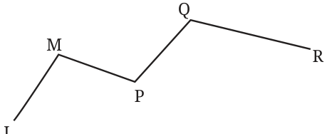
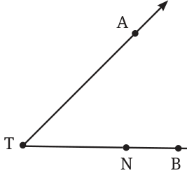
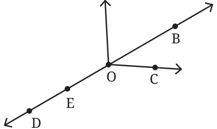
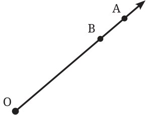

1.
Rihan marked a point Sheetal marked two points on a piece of paper. on a piece of paper. How How many lines can he many different lines can draw that pass through she draw that pass through the point? both of the points?
Can you help Rihan and Sheetal find their answers?
- Name the line segments in Fig. 2.4. Which of the five marked points are on exactly one of the line segments? Which are on two of the line segments?

- Name the rays shown in Fig. 2.5. Is T the starting point of each of these rays?

- Draw a rough figure and write labels appropriately to illustrate each of the following:
- OP and OQ meet at O.
- XY and PQ intersect at point M.
- Line l contains points E and F but not point D.
- Point P lies on AB.
- In Fig. 2.6, name:

- Five points
- A line
- Four rays
- Five line segments
Fig. 2.6
- Here is a ray OA (Fig. 2.7). It starts at O and passes through the point A. It also passes through the point B.

Fig. 2.7
- Can you also name it as OB ? Why?
- Can we write OAas AO? Why or why not?